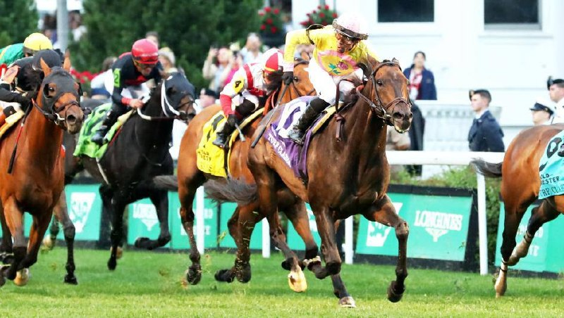

Rhetorical se impone en el Old Forester Bourbon Turf Classic de Churchill Downs
El ejemplar de tres años propiedad de Gary Barber, Cheyenne Stable y Wachtel Stable debutó con éxito sobre la distancia de nueve furlongs en la prueba de Grupo I disputada en hierba.

Rhetorical, hijo de Not This Time, se alzó con la victoria en el Old Forester Bourbon Turf Classic (GI) celebrado en Churchill Downs, afrontando por primera vez en su trayectoria los nueve furlongs sobre superficie de hierba. El ejemplar nacido en Nueva York, propiedad de Gary Barber, Cheyenne Stable y Wachtel Stable, tomó el mando poco después de la salida y mantuvo su ventaja hasta cruzar la meta, demostrando que el aumento de distancia no representó obstáculo alguno para sus cualidades.
La prueba de Grupo I, una de las citas destacadas del calendario estadounidense en la especialidad de turf, confirmó la progresión del ejemplar y su capacidad para imponerse en la máxima categoría. El triunfo supone un hito en la carrera del caballo, que amplía su palmarés con una victoria en una prueba de máximo nivel ante rivales de primer orden.
— Redacción de Galope al Día